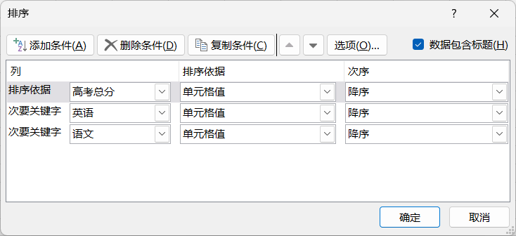

排序和筛选
Sort & Filter
- 在"开始"选项卡 → "编辑"组，也提供有排序和筛选
- 排序 Sort
- 排序时，只需定位在某个单元格就好，即：以当前单元格的数值为依据，对整个工作表排序
- 如果选择了单元格区域，将只会对该区域的数据排序，结果会影响到数据之间的联系
- 可指定多重排序
- 除了基本的排序功能外，还可以利用"排序"删除工作表中多余的空行
- 筛选
- 筛选是针对有标题栏的工作表
- 筛选的同时，可以排序
- 针对数值类的数据，还可以进一步筛选
- 还可以根据指定的条件区域进行更为复杂的筛选
-
CTRL + T：创建超级表，操作更方便
| item | desc |
|---|---|
| 文本 | 首字母拼音顺序 |
| 数字 | 数值大小，从小到大 |
| 日期 | 时间从早到晚 |
| 逻辑 | 假False、真True在后面 |
| 空白单元格 | 无论升序、降序都在最后 |

